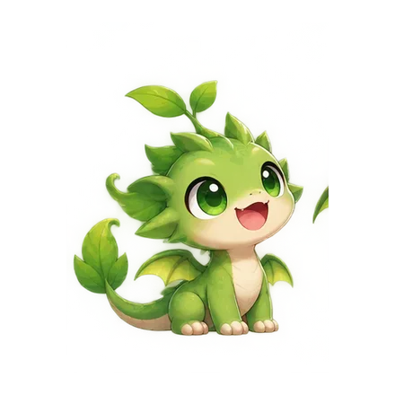

PWA 시험판 · v2.0.0
한자 탐험대
드래곤과 떠나는 한자 카드 모험!

어떤 한자를 만나 볼까요?
오늘의 한자 카드
1 / 50카드를 눌러 뜻과 음을 확인하세요.
한 번 섞은 카드는 중복 없이 등장합니다. 진행 상황은 이 기기에 자동 저장됩니다.
학부모용 기록 보관
휴대전화 분실·기기 변경에 대비해 백업 파일을 따로 저장해 두세요.
기존 Streamlit v1.2.3.8의 JSON 기록은 아직 직접 불러오지 않습니다. 다음 단계에서 이관 기능을 추가합니다.